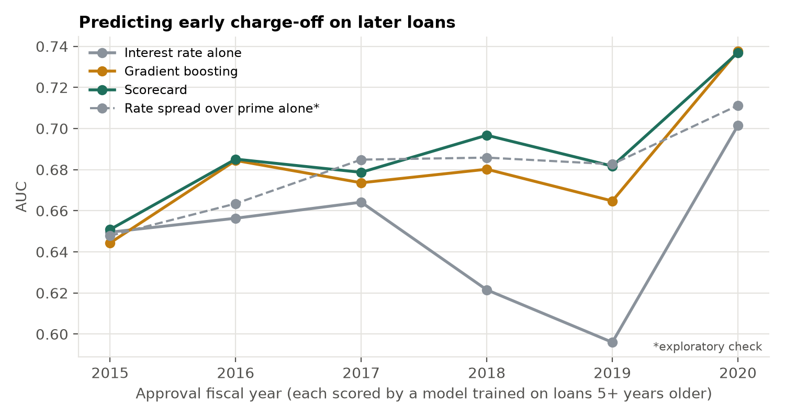
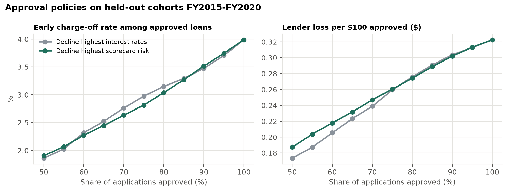
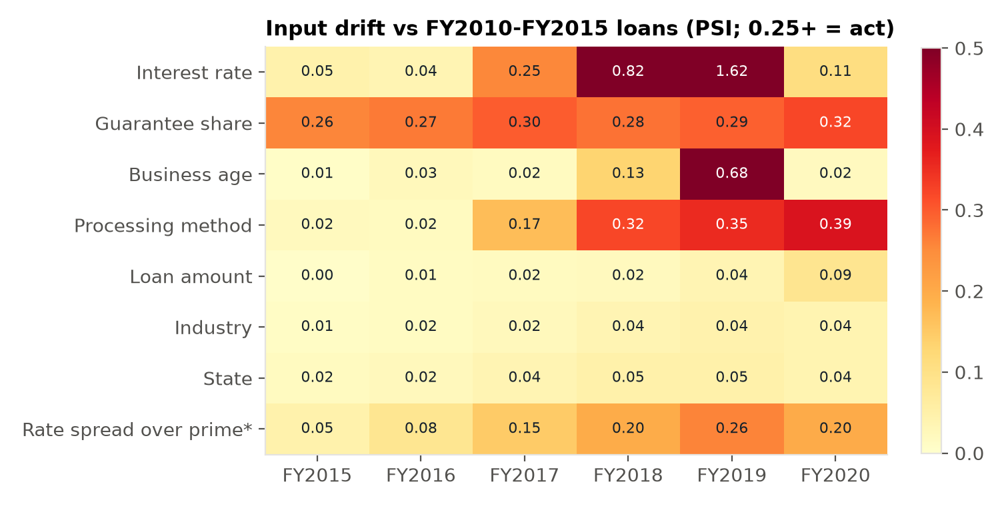

Predicting early charge-off of SBA 7(a) loans approved after the model was built, benchmarked against the lender's own price for risk, with the checks a model-risk team runs.
514,984 disbursed SBA 7(a) loans approved FY2010–FY2020 (SBA loan-level FOIA data, public domain). The outcome is a charge-off within five years of approval. Test cohorts FY2015–FY2020 (304,289 loans) are each scored by a model trained only on loans five or more years older, matching what a lender could have known.

AUC on each held-out cohort. The dashed line is the exploratory spread-over-prime benchmark.
| Model | AUC | 95% CI | KS | Calibration slope |
|---|---|---|---|---|
| Interest rate alone | 0.632 | 0.628–0.637 | 0.23 | 0.94 |
| Rate spread over prime alone (exploratory) | 0.674 | — | — | — |
| Gradient boosting | 0.677 | 0.672–0.681 | 0.26 | 0.89 |
| Scorecard | 0.684 | 0.680–0.689 | 0.28 | 1.03 |
Loan bootstrap within cohort (1,000 resamples). The scorecard beats boosting by 0.0075 (95% CI 0.004–0.011) and the spread benchmark by 0.010 (0.006–0.014).

Approving the safest share of applicants. Lender loss = early charge-off amount times the unguaranteed share. The scorecard wins on default counts in the middle of the range; rate-based declines match or beat it in dollars.

The outcome counts early charge-offs only (52–60% of charge-offs to date). There is no real-estate flag once term is removed, and no lender identity. Public data has no credit-bureau or financial-statement fields, so these results describe what origination data alone can do. The spread check came after seeing results and is labelled exploratory.
Data: U.S. Small Business Administration 7(a) FOIA data, snapshot as of June 30, 2026 (U.S. Government Works); prime rate from FRED (DPRIME). Not affiliated with or endorsed by the SBA.